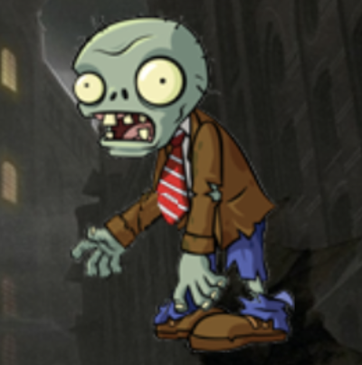
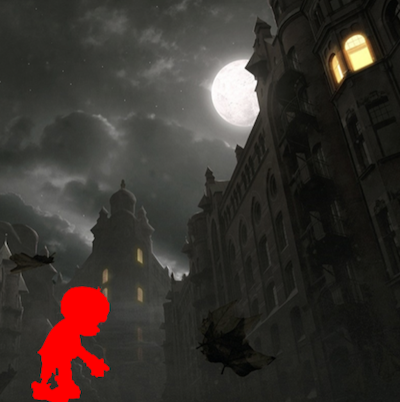

実装機能
|  |
ゾンビが落ちる機能 多くのゾンビが上から下に落ちます。 |
|  |
ゾンビを取り除く機能 タッチで落ちるゾンビを制圧できます。 ゾンビが一番下に達すると、ライフが消費されます。 |

|
ワンをタッチする機能 与えられたサークルを制限時間内にタッチしてすべて削除する必要があります。 取り除かないと、ライフが消耗します。 |
社会に貢献しようとしたこと
クリエイティブなゲームを制作してリリースするので、ゲームをしながら一味違う楽しさを感じることができます。
クリエイティブなゲームを制作してリリースするので、ゲームをしながら一味違う楽しさを感じることができます。
背景と目的
最近、人々はスマートフォンを非常に多く使用しているので、創造的なスマートフォンゲームを作成して人々にサービスを提供するために、ゲーム開発者になることに備えて、私だけのゲームを制作するようになりました。
最近、人々はスマートフォンを非常に多く使用しているので、創造的なスマートフォンゲームを作成して人々にサービスを提供するために、ゲーム開発者になることに備えて、私だけのゲームを制作するようになりました。
学んだこと
- AndroidでViewとCanvasでグラフィックを描く方法を学びました。
- Androidアプリの実装方法を学びました。
進行手順
- ゲームを作成する前に、トラブルシューティングの方法はすぐに思い出させることができ、実装方法はViewとCanvasでグラフィックを描く方法を使用しました。
- クリッカーゲームは初めて作ったので、思ったより長い時間がかかりました。ゲームを作る過程自体が一番難しかったくらいでした。だからタッチしても反応がなく、ゾンビが死なないなどエラーがたくさん出ました。
- これらのエラーを解決するために、ソースコードを修正して実行する作業を継続しました。
- これを行うことができない場合は、Googleでエラーメッセージで検索して問題解決方法を調査し、私のプログラムに適用しました。
- しかし、1つのエラーを解決すると、別のエラーが発生し、Googleで検索を続けたところで解決したことがありました。
- このようにして目的のプログラムを実装できました。
能力強化のために最も努力したこと
Android Graphicでタッチ＆ドラッグ、衝突判定を利用したクリエイティブなゲーム制作
Android Graphicでタッチ＆ドラッグ、衝突判定を利用したクリエイティブなゲーム制作
全体構造

使用技術
Android, Java
Android, Java
開発環境
Android Studio
Android Studio
追加の説明
- 2017年、クックアプスゲーム開発コンペ展に出品し、現業開発者にフィードバックも聞きました。
- ソースコード